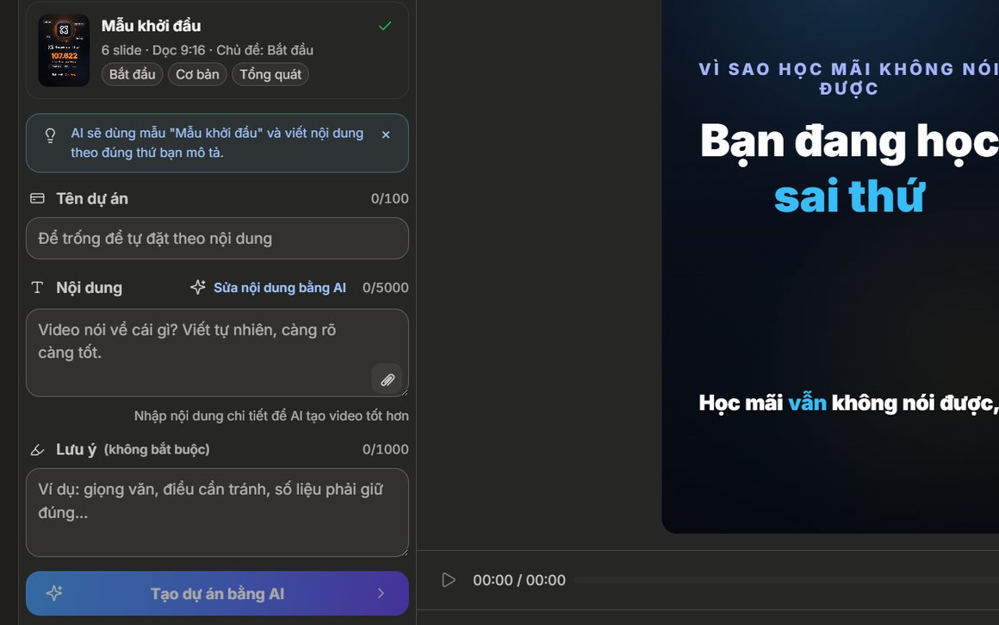
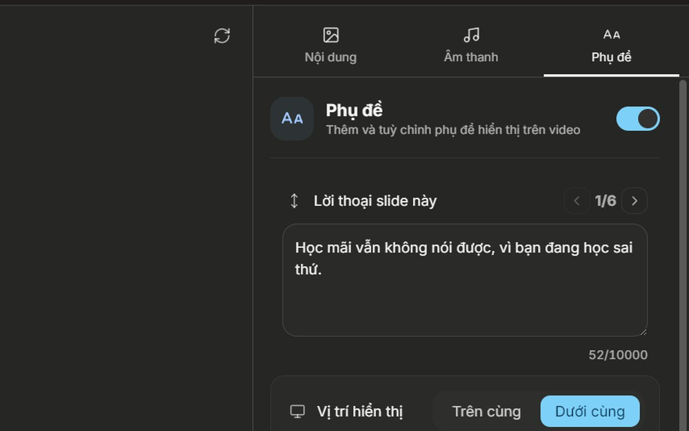
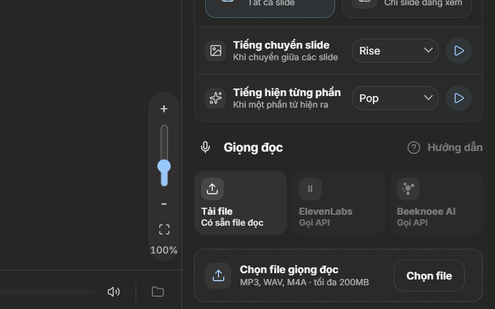
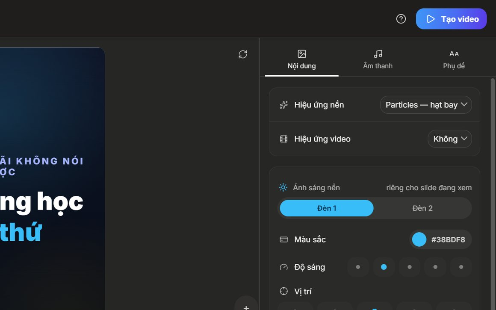

Beeknoee Studio
Tạo video đầu tiên
trong 5 bước
Chọn mẫu
Tả nội dung
Sửa lời thoại
Chọn giọng
Tạo video
1
Chọn một mẫu
Mở trang Mẫu dọc 9:16, ngắm qua các mẫu rồi bấm Tạo dự án bằng AI ở mẫu vừa ý.
2
Tả nội dung
Viết vài dòng về thứ bạn muốn nói. Càng rõ thì AI viết càng sát ý bạn.

3
Sửa lời thoại
Mỗi slide một dòng. Sửa ngay ở ô Lời thoại slide này bên phải.

4
Chọn giọng đọc
Dùng giọng có sẵn của Beeknoee, hoặc tải lên file đọc của riêng bạn.

5
Bấm Tạo video
Nút ở góc trên bên phải. Bấm xong thì app tự lo phần còn lại.

9:16video dọc, sẵn sàng đăng
Phụ đềkhớp theo từng câu
Nhạc nềntrộn sẵn trong file
Lần sau chỉ cần đổi nội dung — mẫu, giọng đọc và thiết lập vẫn giữ nguyên.